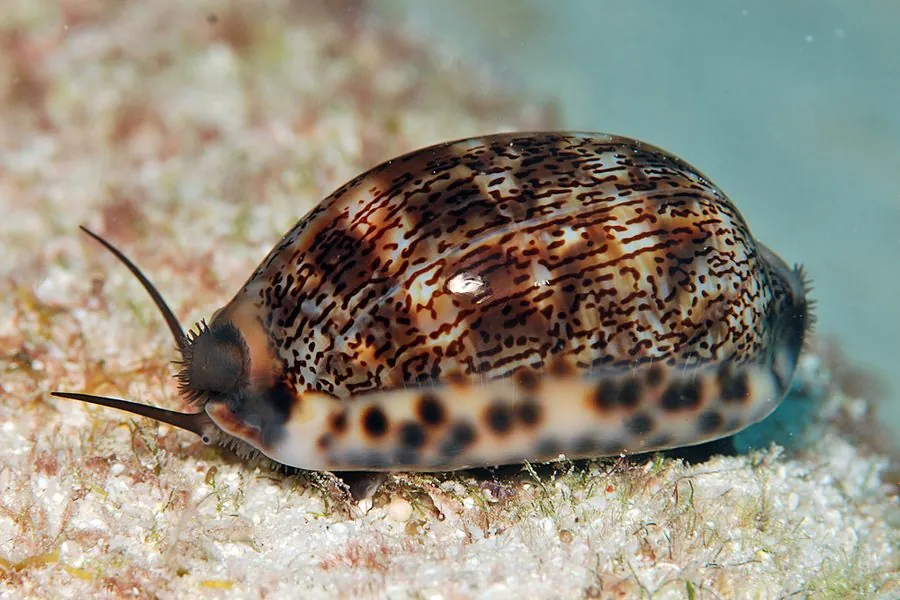

软体动物 · 动物界
阿拉伯宝螺 Mauritia arabica

壳面缀满褐色网纹和白色斑点的大型宝螺，壳缘有齿，生活在珊瑚礁缝隙里，是收藏者喜爱的观赏贝。
- 分类
- 门软体动物门纲腹足纲目中腹足目科宝螺科属绶贝属
- 栖息环境
- 热带珊瑚礁、岩礁缝隙和礁盘下方，水深数米至数十米
- 地理分布
- 印度洋至西太平洋热带海域，包括红海、东非、东南亚、澳大利亚北部和中国南海
- 保护级别
- 尚无专门评估；长期被采集作工艺品和收藏
物种志
阿拉伯宝螺的贝壳呈卵圆形，壳长约八至十厘米，壳质厚重，成体壳面光滑并具瓷质光泽，底色为灰白或浅褐，上面布满褐色的网状纹和白色小斑点，背线明显。壳口狭长，两唇的边缘都长着一列细密的齿，齿间呈橙褐色。幼体时贝壳有薄薄的角质层和螺塔，成体后螺塔被钙质层包裹，几乎看不见，壳形圆润光亮。
它分布于印度洋至西太平洋的热带海域，包括红海、东非、印度、东南亚、澳大利亚北部和中国南海，栖息在珊瑚礁、岩礁的缝隙和礁盘下方，水深数米至数十米，多在夜间活动。它以藻类、海绵和有机碎屑为食，用齿舌刮食礁面。雌雄异体，雌体产下卵囊，幼虫经浮游阶段后附着到礁石上。它壳形美观、花纹独特，长期被采集制作工艺品和饰品，也是贝类收藏中的常见种，目前尚无专门的保护评估。
形态与习性
- 食性刮食藻类、海绵和有机碎屑
- 壳长约八至十厘米，壳质厚重
- 花纹灰白底上布满褐色网纹和白色斑点
- 壳口狭长，两唇边缘各有一列细齿
- 活动多在夜间活动，白天藏于礁缝
- 利用壳可制饰品和工艺品，为常见收藏贝
趣味知识
- 成体阿拉伯宝螺的螺塔被钙质层完全包住，看上去像一个光滑的蛋。
- 它壳口两侧的细齿像拉链一样咬合，闭合时几乎不留缝隙。
- 宝螺在古代曾被当作货币和护身符，阿拉伯宝螺是其中花纹最华丽的一种。